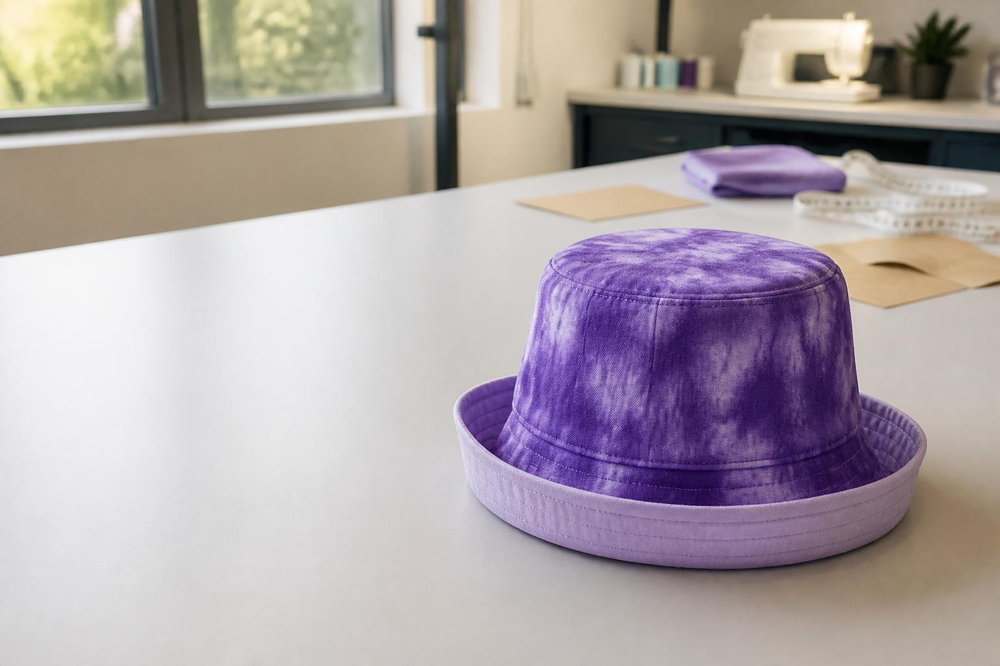

Learn
Read short theory sections with purposeful visuals and topic-matched videos.
Technology Mandatory · Stage 4 · Textiles
Investigate textiles, communicate a respectful cause, develop original ideas, work safely and construct a reversible bucket hat using the teacher-approved pattern and process.

Classroom work, rebuilt for the web
The teacher-posted folio activities and two-term lesson sequence are now ten connected, answerable project activities. Your writing autosaves in this browser and can be printed or backed up from My folio.
Your design challenge
Design and construct a wearable reversible bucket hat that communicates a researched environmental, health, social or identity-based message. Balance function, aesthetics, comfort, respectful representation, sustainability and construction quality.
Read short theory sections with purposeful visuals and topic-matched videos.
Complete ten questions for every named section and return precisely when an answer needs work.
Develop your brief, ideas, samples, plan, progress log and evaluation in the connected folio.
Ten-module pathway
Practical safety
Use tools, machines, heat processes, dyes and cutting equipment only after the teacher has demonstrated the approved method. The real classroom machine, pattern and safety procedure override generic online advice.
Learn the safety routine

Your evidence grows with the project
My folio consolidates all 30 guided responses and every activity stage. Add your own observations and photographs where the teacher directs, then print or back up your work.
Open My folio